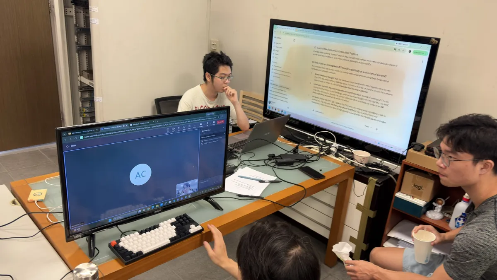
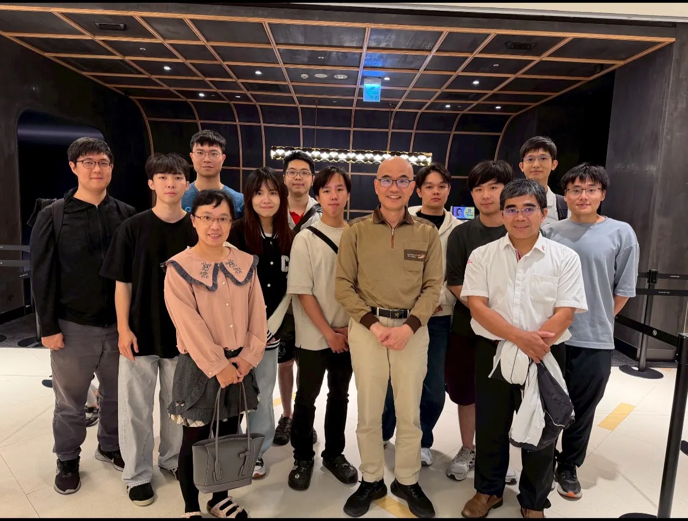
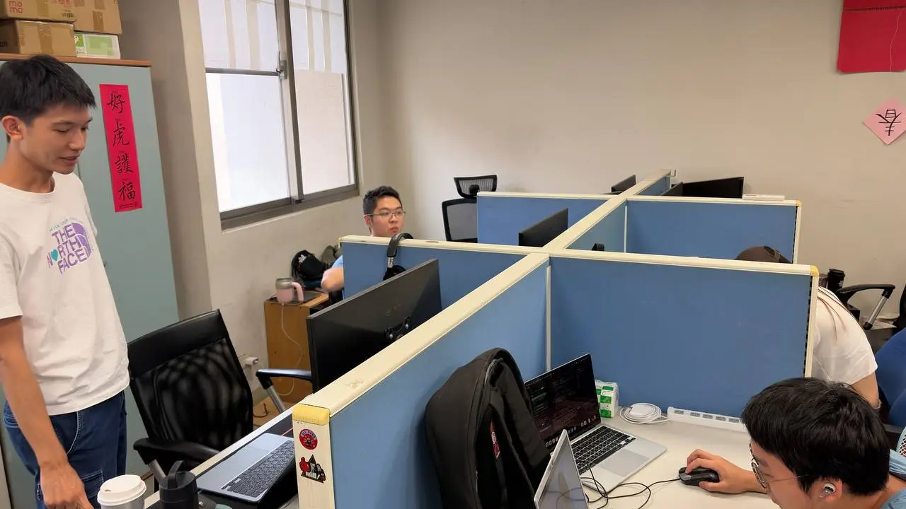
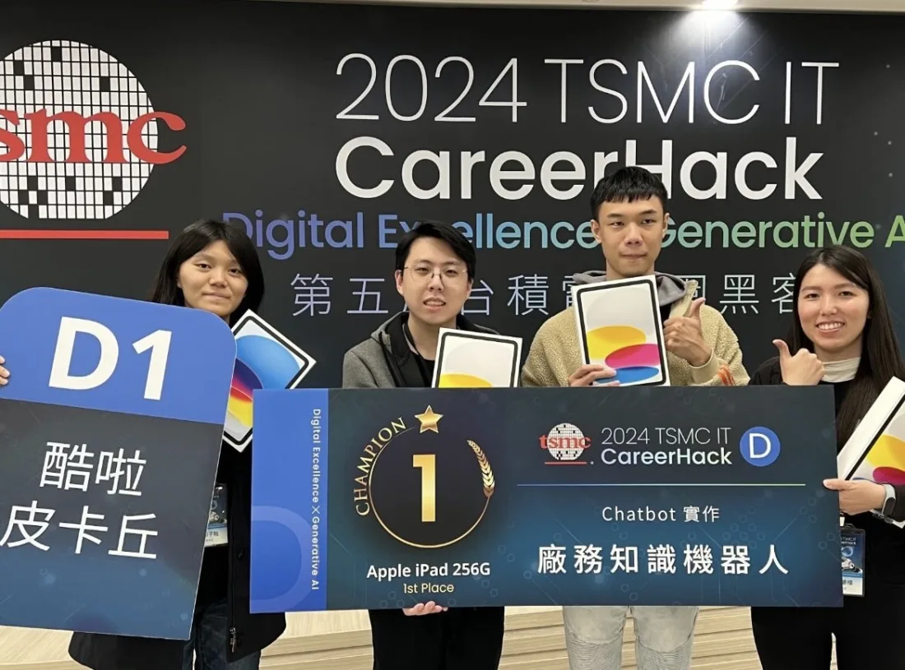
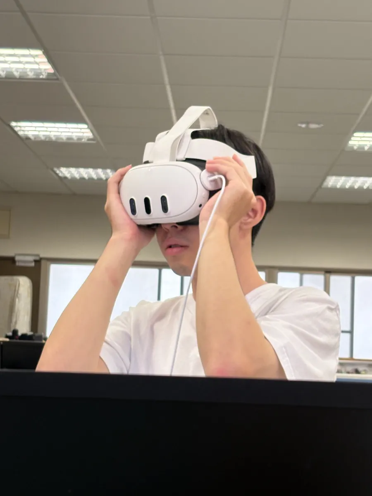

Ubiquitous Sensing & Cloud Computing Lab
Driven by artificial intelligence, we bring machine learning and deep learning into real-world environments — building deployable AI solutions and partnering with industry on innovation.
Welcome to USCC Lab
Dedicated to the research and application of Artificial Intelligence, with a focus on deploying machine learning and deep learning in real-world environments.
In recent years, our lab has actively engaged in AI project development and partnered with industry on academia–industry collaboration programs. These initiatives include mobile application (App) development and data analysis platform design, emphasizing practical technology deployment and alignment with industry practices, and strengthening students' hands-on skills and competitiveness in industry.
We welcome students with a passion for programming to join us, and anyone eager to explore the field of deep learning applications.

Lab Location
Cheng Kung Campus · CSIE Building 6F, 65607
The latest news and member information are updated on the website from time to time. If you have any comments or suggestions, feel free to contact us →
Research Directions
AI & Deep Learning
Research on machine learning and deep learning models, from algorithm design to real-world deployment.
Ubiquitous Sensing
Wireless communication, mobile computing, and sensing for everywhere-smart perception systems.
Cloud Computing
Data analysis platforms and cloud services that power large-scale AI applications.
Lab Moments









